건축산업기사 (2014-08-17 기출문제)
1과목: 건축계획
1. 백화점에 설치하는 에스컬레이터에 관한 설명으로 옳지 않은 것은?
- 수송량에 비해 점유면적이 작다.
- 설치시 충고 및 보의 간격에 영향을 받는다.
- 비상계단으로 사용할 수 있어 방재계획에 유리하다.
- 교차식 배치는 연속적으로 승강이 가능 한 형식이다.
(정답률: 83%)

2. 상점의 숍 프런트(Shop Front)구성에 따른 유형 중 폐쇄형에 관한 설명으로 옳지 않은 것은?
- 일반적으로 서점, 제과점 등의 상점에 적용된다.
- 고객의 출입이 적으며, 상점 내에 비교적 오래 머무르는 상점에 적합하다.
- 상점 내의 분위기가 중요하며, 고객이 내부 분위기에 만족하도록 계획한다.
- 숍 프런트를 출입구 이외에는 벽이나 장식장 등으로 외부와의 경계를 차단한 형식이다.
(정답률: 83%)
3. 상점에서 쇼 윈도우(Show Window)의 반사 방지 방법으로 옳지 않은 것은?
- 쇼 윈도우 형태를 만입형으로 계획한다.
- 쇼 윈도우 내부의 조도를 외부보다 낮게 처리한다.
- 캐노피를 설치하여 쇼 윈도우 외부에 그늘을 조성한다.
- 쇼 윈도우를 경사지게 하거나 특수한 경우 곡면유리로 처리한다.
(정답률: 90%)
4. 공장계획에 관한 설명으로 옳지 않은 것은?
- 장래의 증축, 확장을 고려한다.
- 솟음 지붕은 채광, 환기에 적합한 방법이다.
- 자연채광시 빛의 반사에 대한 벽 및 색채에 유의해야 한다.
- 자연광보다는 인공조명이 피로가 적으므로 인공조명 위주로 계획한다.
(정답률: 84%)
5. 다음 중 주거계획의 기본목표와 가장 거리가 먼 것은?
- 가사노동의 경감
- 가족 본위의 주택
- 생활의 쾌적함 증대
- 주거 공간의 규모 확대
(정답률: 80%)
6. 사무소 건축계획에서 개방식 배치(Open Floor Plan)에 관한 설명으로 옳지 않은 것은?
- 소음이 적고 독립성이 있다.
- 전면적을 유용하게 이용할 수 있다.
- 개설시스템보다 공사비가 저렴하다.
- 자연채광에 보조채광으로서의 인공채광이 필요하다.
(정답률: 84%)
7. 사무소 건축의 코어 유형에 관한 설명으로 옳지 않은 것은?
- 중앙코어형은 구조적으로 바람직한 유형이다.
- 편단코어형은 기준층 바닥면적이 적은 경우에 적합한 유형이다.
- 외코어형은 방재상 2방향 피난시설 설치에 이상적인 유형이다.
- 양단코어형은 단일용도의 대규모 전용사무실에 적합한 유형이다.
(정답률: 88%)
8. 근린주구이론에서 주택단지 구성에 기온이 되는 계획원리로 옳지 않은 것은?
- 하나의 초등학교가 필요하게 되는 인구에 대응하는 규모를 가져야 한다.
- 내부 가로망은 전체가 단지 내의 교통을 원활하게 하여 통과교통에 사용되지 않도록 계획되어야 한다.
- 단지의 경계와 일치한 서비스 구역을 갖는 학교 및 공공건축용지는 간선도로 부근에 분산 배치하여야 한다.
- 통과교통이 내부를 관통하지 않고 용이하게 우회할 수 있는 충분한 넓이의 간선도로에 의해 구획되어야 한다.
(정답률: 61%)
9. 사무소 건축에서 렌터블 비(Rentable Ratío)를 올바르게 표현한 것은?
- 연면적에 대한 임대면적의 비율
- 연면적에 대한 건축면적의 비율
- 대지면적에 대한 임대면적의 비율
- 대지면적에 대한 건축면적의 비율
(정답률: 83%)
10. 공동주택의 2세대 이상이 공동으로 사용하는 복도의 유효폭은 최소 얼마 이상이어야 하는가? (단, 갓복도인 경우)
- 75cm
- 90cm
- 120cm
- 150cm
(정답률: 72%)
11. 실내 환기량에 의해 실의 면적을 구하고자 한다. 성인 2인용 침실의 천장 높이가 2m이고 실내 자연 환기횟수가 3회/h 일 경우, 침실의 최소 바닥면적은? (단, 성인 1인당 신선한 공기 요구량 = 60m3/h)
- 15m2
- 17m2
- 20m2
- 25m2
(정답률: 77%)
12. 공장건축에서 제품중심의 레이아웃에 관한 설명으로 옳지 않은 것은?
- 연속 작업식 레이아웃이다.
- 공정간에 시간적 및 수량적 밸런스가 좋다.
- 생산성이 낮으나 주문 생산품 공장에 적합하다.
- 생산에 필요한 모든 공정과 기계류를 제품의 흐름에 따라 배치하는 형식이다.
(정답률: 82%)
13. 연립주택의 종류 중 타운 하우스에 관한 설명으로 옳지 않은 것은?
- 배치상의 다양성을 줄 수 있다.
- 각 주호마다 자동차의 주차가 용이하다.
- 프라이버시 확보는 조경을 통하여서도 가능하다.
- 토지 이용 및 건설비, 유지관리비의 효율성은 낮다.
(정답률: 75%)
14. 다음 중 공간의 레이아웃(Lay-out)과 가장 밀접한 관계를 가지고 있는 것은?
- 재료계획
- 동선계획
- 설비계획
- 색채계획
(정답률: 82%)
15. 사무소 건축의 엘리베이터 계획에 관한 설명으로 옳지 않은 것은?
- 군 관리운전의 경우 동일 군내의 서비스층은 같게 한다.
- 승객의 층별 대기시간은 평균 운전간격 이상이 되게 한다.
- 수량 계산시 대상 건축물의 교통수요량에 적합해야 한다.
- 서비스를 균일하게 할 수 있도록 건축물 중심부에 설치하는 것이 좋다.
(정답률: 71%)
16. 아파트의 펑면형식 중 홀형(Hall Type)에 관한 설명으로 옳지 않은 것은?
- 프라이버시가 양호하다.
- 좁은 대지에서 직약형 주거가 가능하다.
- 통행부 면적이 작아서 건물의 이용도가 높다.
- 편복도형에 비해 주거단위까지의 동선이 길어 통행이 불편하다.
(정답률: 78%)
17. 상점건축의 일반적인 파사드(Facade)계획에 관한 설명으로 옳지 않은 것은?
- 매점 내로 유도하는 효과를 가지게 한다.
- 외부로부터 상점안이 보이지 않도록 한다.
- 셔터를 내렸을 때의 배려가 되어 있도록 한다.
- 필요 이상의 간판으로 미관을 해치지 않도록 한다.
(정답률: 85%)
18. 학교건축의 배치계획에 관한 설명으로 옳지 않은 것은?
- 교사의 방위는 상풍향을 고려하여 결정하는 것이 바람직하다.
- 학교 행정 및 지원 시설은 학생등 동선에 지장이 없도록 중심부에 위치시킨다.
- 교사의 위치는 평지가 아니라도 운동장보다 약간 높은 곳에 위치하는 것이 좋다.
- 남북 방향으로 긴 대지가 동서 방향으로 긴 대지에 비해 교사의 남향 배치에 유리하다.
(정답률: 71%)
19. 학교운영방식에 관한 설명으로 옳지 않은 것은?
- 종합교실형은 초등학교 저학년에 가장 적당한 형이다.
- 교과교실형에서 각 교과교실은 이용률은 높으나 순수율은 낮다.
- 플래툰형은 교사수 및 시설이 부족하거나 적당하지 않으면 운영이 불가능하다.
- 달톤형은 학급 및 학년을 없애고 학생들은 각자의 능력에 따라서 교과를 골라 수강하는 형식이다.
(정답률: 74%)
20. 학교건축에서 블록플랜에 관한 설명으로 옳지 않은 것은?
- 관리부분의 배치는 전체의 중심이 되는 곳이 좋다.
- 클러스터형이란 복도를 따라 교실을 배치하는 형식이다.
- 초등학교는 학년단위로 배치하는 것이 기본적인 원칙이다.
- 초등학교 저학년은 될 수 있으면 1층에 있게 하며, 교문에 근접시킨다.
(정답률: 82%)
2과목: 건축시공
21. ALC(Auto Claved Lightweight Concrete)의 물리적 성질 중 옳지 않은 것은?
- 기건비중은 보통콘크리트의 약 1/4 정도이다.
- 열전도율은 보통콘크리트와 유사하나 단열성은 매우 우수하다.
- 불연재인 동시에 내화재료이다.
- 경량이어서 인력에 의한 취급이 용이하다.
(정답률: 68%)
22. 분할도급의 종류에 해당하지 않는 것은?
- 단가 도급
- 전문공종별 도급
- 공구별 도급
- 공정별 도급
(정답률: 73%)
23. 타일 붙이기에 대한 설명으로 옳지 않은 것은?
- 도면에 명기된 치수에 상관없이 징두리벽은 은장타일이 되도록 나누어야 한다.
- 벽체 타일이 시공되는 경우 바닥타일을 먼저 시공 후 작업한다.
- 대형 벽돌형(외부) 타일 시공 시 줄눈너비의 표준은 9mm이다.
- 벽타일 붙이기에서 타일 측면이 노출되는 모서리 부위는 코너타일을 사용하거나 모서리를 가공하여 측면이 직접 보이지 않도록 한다.
(정답률: 65%)
24. 공사 중 설계기준을 상회하는 과다한 하중 또는 장비사용시 진동, 충격이 예상되는 부위에 설치하는 서포트로 가장 적합한 것은?
- System Support
- Jack Support
- Steel Pipe Support
- B/T(강관 틀비계) Support
(정답률: 60%)
25. 수밀콘크리트 사용의 가장 큰 목적은?
- 콘크리트를 수중(水中)에 부어넣기 위해서
- 우천시 콘크리트를 부어넣기 위해서
- 콘크리트의 조기강도를 상승시키기 위해서
- 물의 침투를 방지하기 위해서
(정답률: 68%)
26. 파원쇼벨(Power Shovel) 사용 시 1시간당 굴착량은? (단, 버킷 용랑 : 0.76m3, 토량 환산계수 : 1.28, 버킷계수 : 0.95, 작업효율 : 0.50, 1회 사이클 시간 : 26초)
- 12.01 m3/h
- 39.⑤ m3/h
- 63.98 m3/h
- 93.28 m3/h
(정답률: 65%)
27. 다음 자료를 네트워크 공정표로 작성하였을 때 주 공정선(CP)의 소요일수를 구하면?
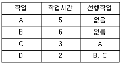
- 16일
- 14일
- 10일
- 8일
(정답률: 58%)
28. 목재 섬유 포화점의 대략적인 함수율은?
- 5%
- 15%
- 30%
- 45%
(정답률: 51%)
29. 철근콘크리트공사에서 철근의 피복을 하는 목적과 가장 거리가 먼 것은?
- 내화성 확보
- 내구성 확보
- 콘크리트 타설실의 유동성 확보
- 동해 방지
(정답률: 53%)
30. AE제를 사용한 콘크리트에 대한 설명으로 옳지 않은 것은?
- 공기량이 많을수록 슬럼프가 증대된다.
- AE제 사용 시 0.03~0.3mm 정도의 미세 기포가 발생하여 시공연도를 증진시킨다.
- 물-시멘트비가 일정할 경우 공기량이 1% 증가할 때 압축강도는 약 3~4% 감소한다.
- AE제는 계항의 정확을 기하기 위해 희석하지 않고 그대로 사용한다.
(정답률: 68%)
31. 건축공사표준시방서에서 정의하고 있는 고강도 콘크리트(High strength Concrete)의 설계기준강도는?
- 보통 콘크리트 : 40MPa 이상, 경량골재 콘크리트 : 27MPa 이상
- 보통 콘크리트 : 40MPa 이상, 경량골재 콘크리트 : 24MPa 이상
- 보통 콘크리트 : 30MPa 이상, 경량골재 콘크리트 : 27MPa 이상
- 보통 콘크리트 : 30MPa 이상, 경량골재 콘크리트 : 24MPa 이상
(정답률: 80%)
32. 건설업의 종합건설업(EC화 ; Engineering Construction)에 대한 설명 중 가장 적합한 것은?
- 종래의 단순한 시공업과 비교하여 건설사업의 발굴 및 기획, 설계, 시공, 유지관리에 이르기까지 사업 전반에 관한 것을 종합, 기획관리하는 업무영역의 확대를 말한다.
- 각 공사별로 나누어져 있는 토목, 건축, 전기, 설비, 철골, 포장 등의 공사를 1개 회사에서 시공하도록 하는 종합건설 면허제도이다.
- 설계업을 하는 회사를 공사시공까지 할 수 있도록 업무 영역을 확대한 면허제도를 밀한다.
- 시공업체가 설계업까지 할 수 있게 하는 면허제도이다.
(정답률: 81%)
33. 다음과 같은 펑면을 갖는 건물 외벽에 15m 높이로 쌍줄비계를 설치할 때 비계면적으로 옳은 것은?
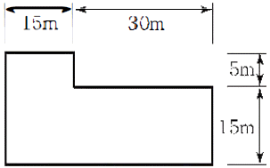
- 1950m2
- 2004m2
- 2⑤8m2
- 2070m2
(정답률: 56%)
34. 방수공사에 사용되는 아스팔트의 양부를 판정하는 데 필요한 사항과 가장 거리가 먼 것은?
- 침입도
- 연화점
- 마모도
- 감은성
(정답률: 58%)
35. 건축공사에서 시공 계획의 수립이나 공사준비가 완료되면 가장 먼저 착수하는 본 공사는?
- 수장공사
- 기초공사
- 철골공사
- 토공사
(정답률: 79%)
36. 콘크리트 양생에 관한 설명 중 옳지 않은 것은?
- 콘크리트 앙생에는 적당한 온도를 유지해야 한다.
- 직사광선은 잉여수분을 적당하게 증발시켜주므로 앙생에 유리하다.
- 콘크리트가 경화될 때까지 충격 및 하중을 가하지 않는 것이 좋다.
- 거푸집은 공사에 지장이 없는 한 오래 존치하는 것이 좋다.
(정답률: 75%)
37. 기본벽돌(190×90×57mm)을 사용하여 줄눈 10mm로 시공할 때 1.5B 벽돌벽의 두께는?
- 190mm
- 210mm
- 290mm
- 300mm
(정답률: 76%)
38. 도장공사에 사용되는 도료에 대한 설명으로 옳지 않은 것은?
- 수성페인트는 내구성과 내수성이 우수하나 내알칼리성과 작업성은 떨어지는 단점이 있다.
- 유성페인트는 내알칼리성이 약하기 때문에 콘크리트면보다 목부와 철부도장에 주로 사용된다.
- 클리어래커는 내부 목재면의 투명 도장에 쓰이며 우아한 광택이 난다.
- 바니시는 건조가 빠르고 주로 옥내 목부의 투명 마무리에 쓰인다.
(정답률: 54%)
39. 벽돌쌓기에서 막힌 줄눈과 비교한 통줄눈에 관한 설명으로 옳지 않은 것은?
- 하중의 균등한 분산이 어렵다.
- 구조적으로 약하게 된다.
- 습기가 스며들 우려가 있다.
- 외관이 보기에 좋지 않다.
(정답률: 64%)
40. 트랜싯 믹스트 콘크리트(Transit Mixed Con-crete)에 관한 설명으로 옳은 것은?
- 완전한 비빔이 완료된 콘크리트를 트럭믹서로 비비며 현장까지 운반하는 것
- 어느 정도 비빈 것을 트럭믹서에 실어 운반 도중 비비며 현장까지 운반하는 것
- 반 정도 비빈 것을 운반하여 현장에서 다시 비벼 사용하는 것
- 트럭믹서에 모든 재료가 공급되어 운반 도중 비비며 현장까지 운반하는 것
(정답률: 63%)
3과목: 건축구조
41. 강도 설계법에 의한 휨부재 설계 시 기본 가정 중 옳지 않은 것은?
- 콘크리트의 응력은 직사각형 응력분포로 볼 때 중립축으로부터 거리에 정비례한다.
- 극한강도 상태에서 콘크리트의 압축 측 연단의 최대 변형률은 0.003으로 한다.
- 콘크리트의 변형률은 중립축으로부터 거리에 비례한다.
- 철근의 극한 변형률은 fy/ES로 본다.
(정답률: 50%)
42. 그림과 같은 단면의 밑면에서 도심(圖心)까지의 거리 y는?
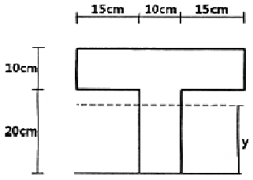
- 25cm
- 20cm
- 18cm
- 15cm
(정답률: 48%)
43. 기둥에 편심 축하중이 작용할 때의 상태를 옳게 설명한 것은?
- 압축력만 작용하며 휨모멘트는 발생하지 않는다.
- 휨모멘트만 작용하며 압축력은 발생하지 않는다.
- 압축력과 휨모멘트가 작용하며 단면 내에 인장력이 발생하는 경우도 있다.
- 압축력 및 인장력이 작용하며 휨모멘트는 발생하지 않는다.
(정답률: 55%)
44. 철근 직경(db)에 따른 표준갈고리의 구부림 최소 내면 반지름 기준으로 틀린 것은?
- D13 주철근 : 2db 이상
- D25 주철근 : 3db 이상
- D13 띠철근 : 2db 이상
- D16 띠철근 : 2db 이상
(정답률: 45%)
45. 철근콘크리트 보에서 늑근의 사용 목적으로 적절하지 않은 것은?
- 전단력에 의한 전단균열 방지
- 철근조립의 용이성
- 주철근의 고정
- 부재의 휨 강성 중대
(정답률: 44%)
46. 길이가 10mOl고, 단면이 3×3cm인 정사각형 단면의 강재에 인장력이 작용하여 길이가 0.6cm, 폭이 0.0006cm 변형되었다. 이 때 강재의 푸아송비는?
- 1/2
- 1/3
- 1/3.5
- 1/4
(정답률: 66%)
47. 그림과 같은 트러스 구조에서 AC부재의 부재력은? (단, 인장력은 +, 압축력은 -)
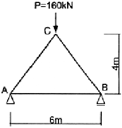
- +80 kN
- -80 kN
- +100 kN
- -100 kN
(정답률: 27%)
48. 극한강도설계(USD)에서 처짐 검토에 적용되는 하중은?
- 계수하중
- 설계하중
- 사용하중
- 부가하중
(정답률: 52%)
49. 철근콘크리트보의 인장 이형 철근의 정착길이 보정계수와 관련이 없는 것은?
- 강도감소계수
- 철근도막계수
- 경량콘크리트계수
- 철근배치위치계수
(정답률: 43%)
50. 그림과 같은 구조물의 부정정 치수는?
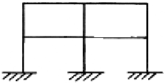
- 9차
- 12차
- 15차
- 18차
(정답률: 71%)
51. 기초의 분류에서 기초판의 형식에 의한 분류로 부적당한 것은?
- 독립기초
- 복합기초
- 온통기초
- 직접기초
(정답률: 55%)
52. 강도설계법에 의한 철근콘크리트 보 설계시 단근 직사각형보에서 균형단면을 이루기 위한 중립축의 위치 Cb가 300mm인 경우 등가응력블록의 깊이 a는? (단, fck = 27MPa 이다)
- 180mm
- 210mm
- 225mm
- 255mm
(정답률: 42%)
53. 건물의 부동침하 원인으로 거리가 먼 것은?
- 지반이 연약한 경우
- 이질기초를 한 경우
- 지하실을 강성체로 설 치한 경우
- 경사지반에 놓인 경우
(정답률: 73%)
54. 처짐을 계산하지 않는 경우 각 조건에 따른 1방향 슬래브의 최소 두께로 틀린 것은? (단, 보통중량콘크리트와 설계기준항복강도 400MPa 철근 사용)
- 경간 3m의 1단연속 슬래브 : 100mm
- 경간 3m의 단순지지 슬래브 : 150mm
- 경간 2.8m의 양단연속 슬래브 : 100mm
- 경간 1.5m의 캔틸래버 슬래브 : 150mm
(정답률: 52%)
55. 기둥에서 장주의 좌굴하중은 Euler 공식으로부터
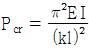
이다. 기둥의 지지조건이 양단힌지일 때 기둥의 유효길이계수 K는?- 0.5
- 0.7
- 1.0
- 2.0
(정답률: 49%)
56. 그림과 같은 조건에서 G2 보의 유효폭(B)의 값은?
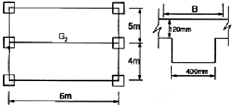
- 1000mm
- 1500mm
- 2000mm
- 2320mm
(정답률: 56%)
57. 다음과 같은 단순보에서 전단력이 0이 되는 위치는 B점으로부터 좌측으로 얼마의 거리에 있는가?
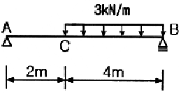
- 4/3m
- 5/3m
- 8/3m
- 4m
(정답률: 44%)
58. 그림과 같은 부정정 구조물에서 C점의 휨모멘트는 얼마인가?
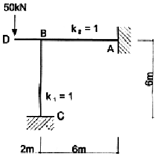
- 0 kNㆍm
- 25 kNㆍm
- 50 kNㆍm
- 100 kNㆍm
(정답률: 40%)
59. 그림과 같은 단면을 가진 보에서 A-A축에 대한 휨강도(ZA)와 B-B축에 대한 휨강도(ZB)의 관계를 옳게 나타낸 것은?
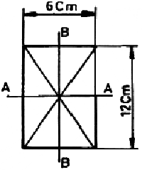
- ZA = 1.5ZB
- ZA = 2.0ZB
- ZA = 2.5ZB
- ZA = 3.0ZB
(정답률: 60%)
60. 유효두께 d = 400mm인 철근콘크리트 기초판에서 2방향 전단에 저항하기 위한 위험단면의 둘레길이는? (단, 기둥의 단면은 500×500mm)
- 1600mm
- 3000mm
- 2000mm
- 3600mm
(정답률: 31%)
4과목: 건축설비
61. 전기설비용 시설공간(실)에 관한 설명으로 옳지 않은 것은?
- 발전기실은 변전실과 인접하도록 배치한다.
- 중앙감시실은 일반적으로 방재센터와 겸하도록 한다.
- 전기샤프트는 각 층에서 가능한 한 공급대상의 중심에 위치하도록 한다.
- 주요 기기에 대한 반입, 반출 통로를 확보하되, 외부로 직접 출입할 수 있는 반출입구를 설치하여서는 안 된다.
(정답률: 75%)
62. 호텔의 주방이나 레스토랑의 주방 등에서 배출되는 배수 중의 유지문을 포집하기 위하여 사용되는 포집기는?
- 오일 포집기
- 헤어 포집기
- 그리스포집기
- 플라스터 포집기
(정답률: 76%)
63. 환기설비에 관한 설명으로 옳지 않은 것은?
- 환기는 복수의 실을 동일 계통으로 하는 것을 원칙으로 한다.
- 필요 환기량은 실의 이용목적과 사용 상황을 충분히 고려하여 결정한다.
- 외기를 받아들이는 경우에는 외기의 오염도에 따라서 공기청정장치를 설치한다.
- 전열교환기에서 열회수를 하는 배기계통에는 악취나 배기가스 등 오염물질을 수반하는 배기는 사용하지 않는다.
(정답률: 70%)
64. 오배수 입상관으로부터 취출하여 위쪽의 동기관에 연결되는 배관으로, 오배수 입상관 내의 압력 을 같게 하기 위한 도피통기관은?
- 습통기관
- 각개통기관
- 결합통기관
- 공용통기관
(정답률: 73%)
65. 배관의 신축이음에 속하지 않는 것은?
- 루프형
- 스위블형
- 벨로우즈형
- 섹스티아
(정답률: 70%)
66. 공기조화방식 중 이중 덕트 방식에 관한 설명으로 옳지 않은 것은?
- 전공기방식의 특성이 있다.
- 혼합상자에서 소음과 진동이 생긴다.
- 냉ㆍ온풍을 혼합사용하므로 에너지 절감효과가 크다.
- 부하특성이 다른 다수의 실이나 존에도 적용할 수 있다.
(정답률: 72%)
67. 오수정화조의 설치에 관한 설명으로 옳지 않은 것은?
- 주변의 공지는 녹화하는 것이 좋다.
- 배수의 수위 변동에 의한 오수의 역류가 없도록 한다.
- 건물로부터의 배수가 펌프에 의해 유입될 수 있도록 한다.
- 환경문제가 발생하지 않도록 건물로부터 멀리 설치하는 것이 좋다.
(정답률: 64%)
68. 다음 중 난방부하 계산에서 일반적으로 고려하지 않는 것은?
- 외벽을 통한 관류부하
- 유리창을 통한 관류부하
- 도입외기에 의한 외기부하
- 인체의 발생열량에 의한 인체부하
(정답률: 69%)
69. 급수배관 계통 중에 공기실(Air Chamber)을 설치하는 주된 목적은?
- 이상 충격압에 의한 수격작동을 방지하기 위하여
- 배관의 온도변화에 따른 신축을 흡수하기 위하여
- 각 수전류에 공급되는 수압을 일정하게 조정하기 위하여
- 배관 계통 내에 정체되어 있는 공기를 밖으로 배출하기 위하여
(정답률: 58%)
70. 명시적 조명의 좋은 조명조건으로 옳지 않은 것은?
- 필요한 밝기로서 적당한 밝기가 좋다.
- 분광분포와 관련하여 표준주광이 좋다.
- 휘도분포와 관련하여 얼룩이 없을수록 좋다
- 직시 눈부심은 없어야 좋지만, 반사 눈부심은 있어야 좋다
(정답률: 79%)
71. 덕트의 분기구에 설치하여 풍랑조절용으로 사용되는 댐퍼는?
- 스플릿 댐퍼
- 평행익형 댐퍼
- 대향익형 댐퍼
- 버터플라이 댐퍼
(정답률: 63%)
72. 건축설비분야에셔 급수. 급탕, 배수 등에 주로 사용되는 터보형 펌프는?
- 사류 펌프
- 마찰 펌프
- 왕복식 펌프
- 원심식 펌프
(정답률: 67%)
73. 다음 중 수질 오염 가능성이 가장 낮은 급수방식은?
- 수도직결방식
- 고가탱크방식
- 압력탱크방식
- 펌프직송방식
(정답률: 82%)
74. 축전지에 관한 설명으로 옳지 않은 것은?
- 연축전지의 공칭전압은 1.5[V/셀]이다.
- 연축전지는 충방전 전압의 차이가 적다.
- 알칼리축전지의 공칭전압은 1.2[V/셀]이다.
- 알칼리축전지는 과방전, 과전류에 대해 강하다.
(정답률: 59%)
75. 간접배수를 하여야 하는 기기 및 장치에 속하지 않는 것은?
- 세면기
- 세탁기
- 제빙기
- 식기세정기
(정답률: 69%)
76. 목사난방에 대한 설명으로 옳지 않은 것은?
- 방이 개방상태에서도 난방 효과가 있다.
- 실내의 온도 분포가 권등하고 쾌감도가 높다.
- 방열기가 필요치 않으며 바닥면의 이용도가 높다.
- 열용량이 작아 외기변화에 따른 방열량 조절이 용이하다.
(정답률: 77%)
77. 원터 해머가 발생할 우려가 있어, 이에 대한 대책을 고려하여야 하는 지점으로 옳지 않은 것은?
- 물 탱크 등에 설치된 볼탭
- 완폐쇄형 수도꼭지 사용개소
- 펌프 토출측 및 양수관 구간에 설치된 체크밸브 상단
- 급수배관 계통의 전자밸브, 모터밸브 등 급폐형 밸브설치 개소
(정답률: 53%)
78. 회로의 접속을 절환하고, 전원으로부터 회로나 장치를 분리하는 데 사용하는 스위치는?
- 단로 스위치
- 절환 스위치
- 범용 스위치
- 범용 스냅 스위치
(정답률: 54%)
79. 스프링클러설비에서 각 층을 수직으로 관통하는 수직배관을 의미하는 것은?
- 주배관
- 가지배관
- 교차배관
- 급수배관
(정답률: 60%)
80. 물의 경도는 물 속에 녹아있는 칼슐, 마그네슘 등의 염류의 양을 무엇의 농도로 환산하여 나타낸 것인가?
- 탄산칼슘
- 용존산소
- 수소이온농도
- 염화마그네슘
(정답률: 66%)
5과목: 건축관계법규
81. 다음 중 내화구조에 해당하지 않는 것은?
- 철골조 계단
- 철골조 기둥
- 철근콘크리트조로서 두께가 10cm 이상인 바닥
- 골구를 철골조로 하고 그 양면을 두께 5cm의 석재로 덮은 벽
(정답률: 46%)
82. 다음은 지하층의 구조에 관한 기준 내용이다. ( ) 안에 알맞은 것은?(2017년 02월 03일 개정된 규정 적용됨)
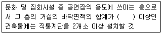
- 50m2
- 100m2
- 200m2
- 300m2
(정답률: 36%)
83. 부설주차장을 설치하지 아니하고 단독주택을 건축할 수 있는 시설면적기준은? (단, 다가구주택 제외)
- 50m2 이하
- 100m2 이하
- 130m2 이하
- 150m2 이하
(정답률: 53%)
84. 시설물의 부지 인근에 단독 또는 공동으로 부설주차장을 설치할 수 있는 부설주차장의 규모 기준은?
- 주차대수 100대 이하
- 주차대수 200대 이하
- 주차대수 300대 이하
- 주차대수 400대 이하
(정답률: 72%)
85. 자연녹지지역 안에서 건축할 수 있는 건축물의 최대 층수는? (단, 제1종 근린생활시설로서 도시ㆍ군계획조례로 따로 층수를 정하지 않은 경우)
- 3층
- 4층
- 5층
- 6층
(정답률: 63%)
86. 건축법령상 다음과 같이 정의되는 것은?
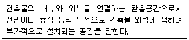
- 거실
- 발코니
- 출입구 홀
- 유틸리티룸
(정답률: 87%)
87. 건축선에 관한 설명으로 옳지 않은 것은?
- 건축선은 대지와 도로의 경계선으로 하는 것이 원칙이다.
- 건축선은 도로와 접한 부분에 건축물을 건축할 수 있는 선을 의미한다.
- 지표 아래 부분을 포함하며 건축물은 건축선의 수직면을 넘어서는 아니 된다.
- 도로면으로부터 높이 4.5m 이하에 있는 창문을 열고 닫을 때 건축선의 수직면을 넘지 아니하는 구조로 하여야 한다.
(정답률: 39%)
88. 건축물의 대지에 공개공지 또는 공개공간을 확보하여야 하는 대상 건축물에 속하지 않는 것은?
- 판매시설로서 해당 용도로 쓰는 바닥면적의 합계가 4000m2인 건축물
- 업무시설로서 해당 용도로 쓰는 바닥면적의 합계가 5000m2인 건축물
- 숙박시설로서 해당 용도로 쓰는 바닥면적의 합계가 6000m2인 건축물
- 문화 및 집회시설로서 해당 용도로 쓰는 바닥면적의 합계가 5000m2인 건축물
(정답률: 56%)
89. 노상주차장의 일부에 대하여 전용주차구획을 설치할 수 있는 경우에 속하지 않는 것은? (단, 지방자치단체의 조례로 정하는 자동차를 위한 경우는 제외)
- 하역주차구획으로서 인근 이용자의 화물자동차를 위한 경우
- 대한민국에 주재하는 외교공관 및 외교관의 자동차를 위한 경우
- 상업지역에 설치된 노상주차장으로서 인근 상점의 자동차를 위한 경우
- 주거지역에 설치된 노상주차장으로서 인근 주민의 자동차를 위한 경우
(정답률: 48%)
90. 공사감리자가 수행하는 감리업무에 속하지 않는 것은? (단, 기타 공사감리계약으로 정하는 사항은 제외)
- 공정표의 검토
- 상세시공도면의 작성
- 설계변경의 적정 여부의 확인
- 공사현장에서의 안전관리의 지도
(정답률: 80%)
91. 다음 그림과 같은 단면을 갖는 실의 반자높이는? (단, 실의 형태는 직사각형임)
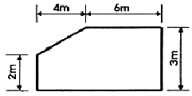
- 2.0m
- 2.5m
- 2.8m
- 3.0m
(정답률: 68%)
92. 그림과 같은 일반 건축물의 건축면적은?
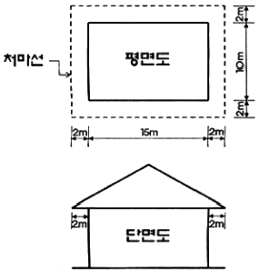
- 150m2
- 204m2
- 234m2
- 266m2
(정답률: 55%)
93. 노외주차장의 주차 형식에 따른 차로의 최소 너비 기준으로 옳지 않은 것은? (단, 이륜자동차전용 외의 노외주차장으로 출입구가 1개인 경우)
- 평행주차 : 5.0m
- 직각주차 : 6.0m
- 교차주차 : 5.0m
- 60도 대향항주차 : 6.0m
(정답률: 48%)
94. 다음은 건축물의 층수 산정과 관련된 기준 내용이다. ( ) 안에 알맞은 것은?
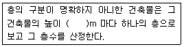
- 2m
- 3m
- 4m
- 5m
(정답률: 77%)
95. 다음 중 건축물에 대한 구조의 안전을 확인하는 경우 건축구조기술사의 협력을 받아야 하는 건축물에 해당하지 않는 것은?
- 다중이용 건축물
- 층수가 6층인 건축물
- 기둥과 기둥 사이의 거리가 10m인 건축물
- 한쪽 끝은 고정되고 다른 끝은 지지되지 아니한 구조로 된 차양 등이 외벽의 중심선으로부터 3m 돌출된 건축물
(정답률: 51%)
96. 다음 중 건축물의 주요구조부를 내화구조로 하여야 하는 것은?
- 공장의 용도로 쓰는 건축물로서 그 용도로 쓰는 바닥면적의 합계가 1000m2인 건축물
- 판매시설의 용도로 쓰는 건축물로서 그 용도로 쓰는 바닥면적의 합계가 500m2인 건축물
- 수련시설의 용도로 쓰는 건축물로서 그 용도로 쓰는 바닥면적의 합계가 400m2인 건축물
- 문화 및 집회시설 중 전시장의 용도로 쓰는 건축물로서 그 용도로 쓰는 바닥면적의 합계가 350m2인 건축물
(정답률: 56%)
97. 다음은 건축물의 바닥면적 산정방법에 관한 기준 내용이다. ( ) 안에 알맞은 것은?
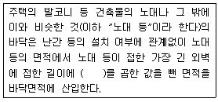
- 1m
- 2m
- 1.5m
- 2.5m
(정답률: 44%)
98. 건축물의 용도분류상 단독주택에 속하지 않는 것은?
- 공관
- 다중주택
- 다세대주택
- 다가구주택
(정답률: 70%)
99. 상업지역의 세분에 속하지 않는 것은?
- 준상업지역
- 일반상업지역
- 중심상업지역
- 유통상업지역
(정답률: 39%)
100. 다음 중 건축법상 다중이용건축물에 속하는 것은? (단, 건축물의 층수가 15층인 경우)
- 운동시설의 용도로 쓰는 바닥면적의 합계가 5000m2인 건축물
- 교육연구시설의 용도로 쓰는 바닥면적의 합계가 3000m2인 건축물
- 의료시설 중 종합병원의 용도로 쓰는 바닥면적의 합계가 5000m2인 건축물
- 숙박시설 중 일반숙박시설의 용도로 쓰는 바닥면적의 합계가 5000m2인 건축물
(정답률: 55%)